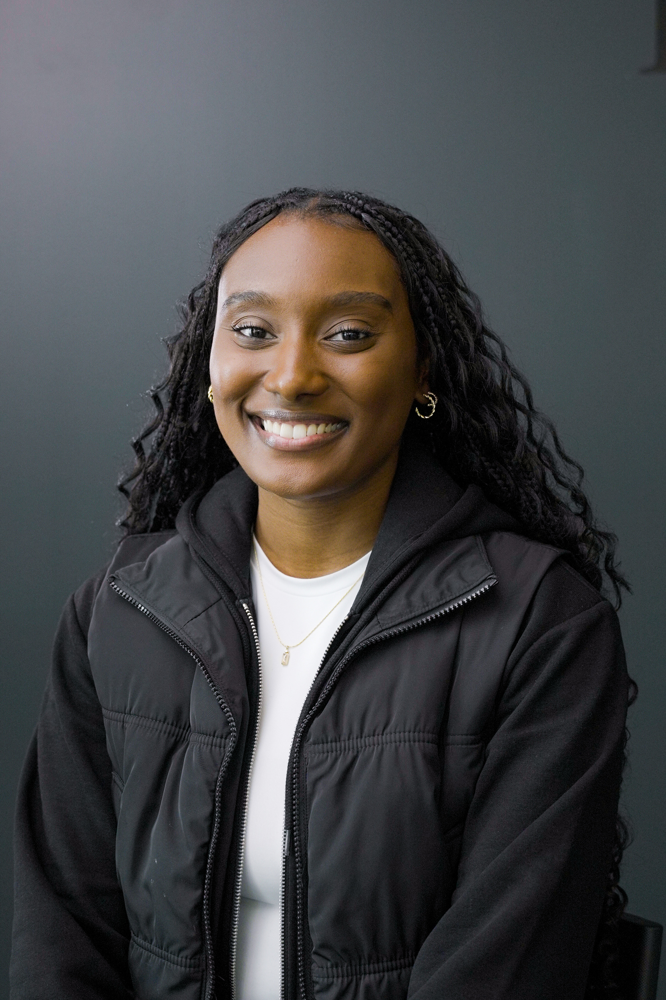
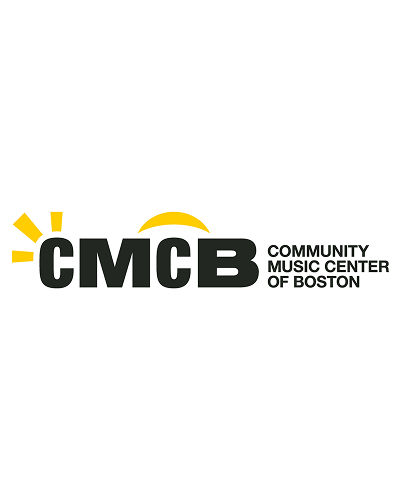
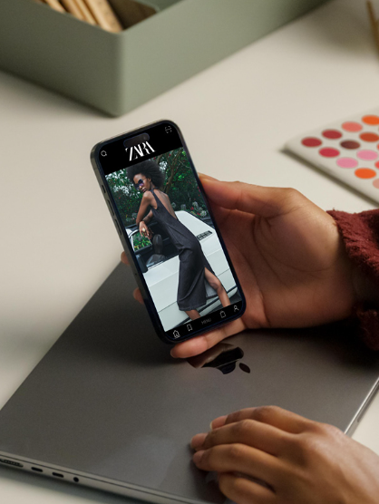
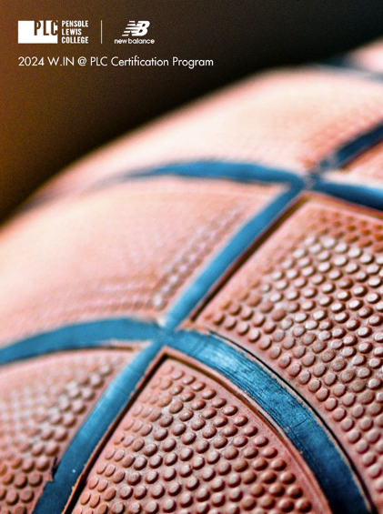

About
Designing the future through innovation, functionality, and empathy

My name is Azaria Molina, and I'm a multidisciplinary designer with a Bachelor of Science in Industrial Design from Virginia Tech. I'm passionate about creating thoughtful, user-centered experiences across physical and digital spaces, with interests spanning UX/UI, web design, and footwear design.
With a strong foundation in design software and prototyping, I bring ideas to life through an iterative process grounded in user research and testing. I value collaboration and feedback, and I'm always looking for opportunities to grow, refine my skills, and learn from others. My goal is to design solutions that are not only visually compelling, but also functional, accessible, and impactful.
Some of my hobbies are video editing, photography, traveling, crocheting, playing sports, and discovering new music.
Software & Skills
Featured Projects
Portfolio
A curated blend of frontend development, industrial design, and UX projects.

Personal Page Assignment
The Personal Page is my first web development project completed through G{Code}. Created after the first three weeks of the 12-week program, it showcases my foundational HTML and CSS skills in a personal webpage about someone I admire.

Capstone Project
The Community Music Center of Boston Capstone is my final web development project with G{Code}. Working as part of a team, we redesigned the nonprofit's existing website, applying the HTML, CSS, and JavaScript skills we developed throughout the 12-week program.

ZARA App Redesign Capstone Project
The Zara App Redesign is a capstone UX project completed toward the end of the Parsons School of Design × Creative Bloq UX Design Foundations Certification Program. In this project, I redesigned the Zara app by applying user research, wireframing, prototyping, and user-centered design principles.

PLC x New Balance
W.IN @ PLC is a four-week design certificate program at Pensole Lewis College. In partnership with New Balance, I designed lifestyle footwear for the future athlete of 2030, applying footwear design principles while exploring innovation for women in sports.
Contact
Let's Work Together
Whether you have a project in mind, a job opportunity, or just want to say hello, I'd love to hear from you.
Email: azariakmolina@gmail.com
LinkedIn